Los cascarudos y los Manos: la invasión con la misma técnica que el elenco.
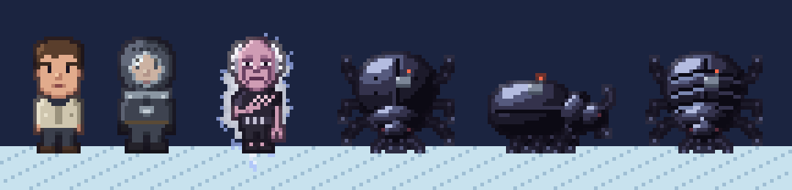
Nunca se ven. "El odio cósmico." No tienen sprite: se sienten en la nieve, la luz y las órdenes.
Esclavos de Ellos que dirigen la invasión. Del tamaño de un hombre. Tienen una mano con muchos dedos y una glándula del terror: si sienten miedo, mueren.
Gurbos y hombres-robot: quedan para otra entrega.
Escarabajos gigantes, la tropa de choque. Los Manos los manejan con un teledirector pegado al caparazón.
Este deck diseña los niveles 1 y 3, los que aparecen en la demo.
| Mano | 16×32, igual que Juan; flota 1–2 px sobre la nieve |
| Aura del Mano | +10 px por lado, capa aparte (aditiva) |
| Cascarudo de frente | 32×28 (2×2 baldosas) |
| Cascarudo de perfil | 36×22 |
| Acorazado | mismo cuerpo, con placas y cuerno |
| Lectura | humanos cálidos · Manos lila/negro con halo · cascarudos negro-azul frío |
Los enemigos son fríos: negro azulado y lila, con brillos de nieve. La única nota cálida es el punto rojo del teledirector, que dice "esto lo maneja alguien".
#0c0a14#1c1a2a#34324c#565a7e#b4bce0#4a5262#7c8698#c4ccd8#ff6a4a#6a4262#a06e8e#cf9cb4#efc8d8#1a1622#2a2434#463e58#c4c0d4#9e98ae#dcd8e2#a8bcff#f4f6ff"Nosotros, los Manos, que sólo vivíamos pensando en lo bello…"
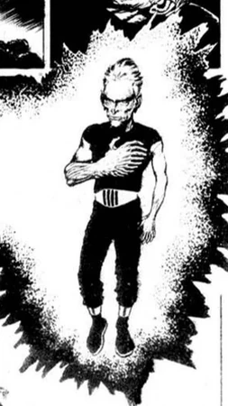
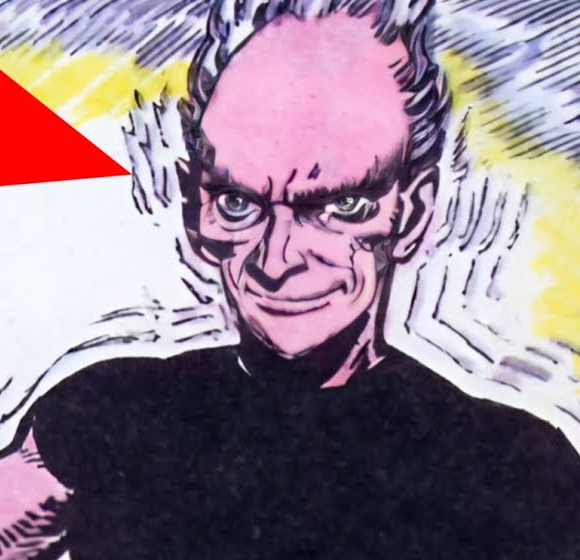
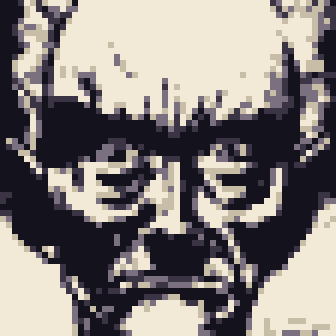
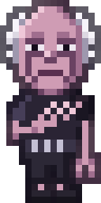
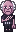
tamaño real · ×2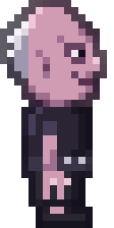
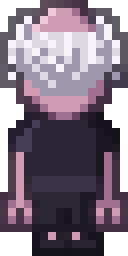
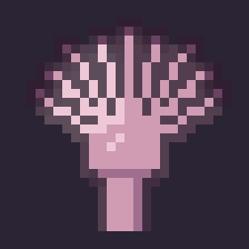
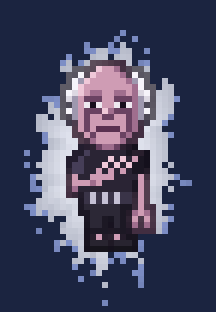
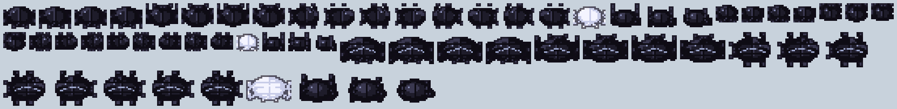
Manchas negras de 14–28 px: de lejos no se sabe qué son ni para dónde miran.
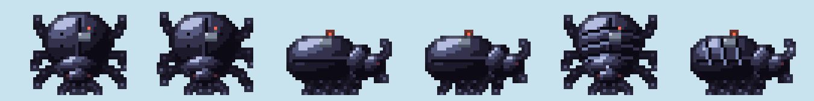
Rediseño: caparazón con volumen (luz arriba a la izquierda y brillo especular), costura del élitro, pronoto con borde, cabeza con mandíbulas, antenas segmentadas y seis patas articuladas. Arriba a la derecha, el teledirector con su luz roja. Común (2 pasos de frente y de perfil) y acorazado.
32×28. Avanza en línea recta, en grupo. Patas alternadas en trípode: 4 cuadros por dirección.
Mismo dibujo al 70% (22×20), sin teledirector visible. Corre en zigzag.
Placas transversales con filo claro y cuerno. Aguanta varios tiros; se lo da vuelta.
Pasar las grillas de art/concept/enemies.py a tools/art: 4 direcciones, vaivén de 4 cuadros, cuadro de "se tapa la cara" y muerte en puntos.
3 patrones de punteado que titilan; capa aditiva y luz sobre la nieve.
Reemplazar tools/art/cascarudos.py por el nuevo dibujo: 4 direcciones × 4 pasos, golpe, muerte, las tres variantes.
Retrato de diálogo del Mano en tinta (56×56) y el globo de borde punteado.
Conceptos: art/concept/enemies.py → art/concept/out/enemy_*.png · referencias en ref/manos/